判读：E 帧 = 右转约定（从右肩位跨步转入面向），W 帧 = 镜像左转。与本体录像
右转/左转中段帧比对——E 与本体右转一致则维持，相反则
Locomotion.pickTurnClip 返回值 'E'/'W' 互换（一行）。
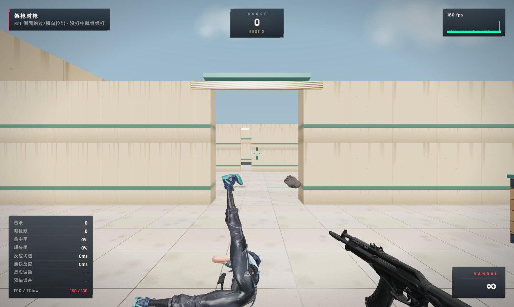
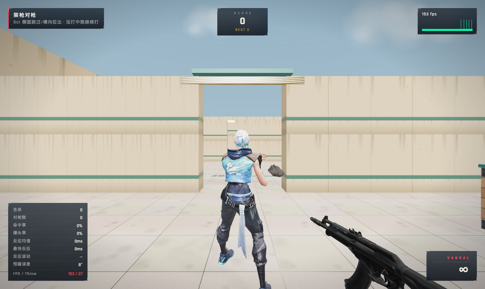
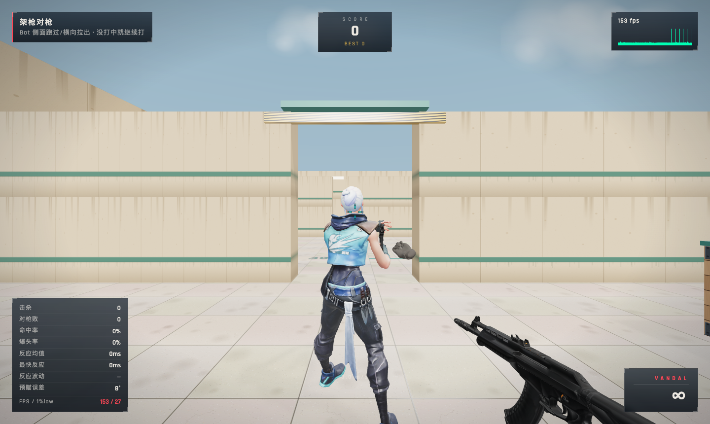
slow = clip 天然速率（近零滑步、步频 1.9 步/s）；fast = 本体 50% 跑速口径
（步频 3.2 步/s ≈ 走路同档）。回填：设置→训练→「蹲走拉出速度」滑条试玩后，
把默认值写回 Config.training.crouchWalkSpeed。
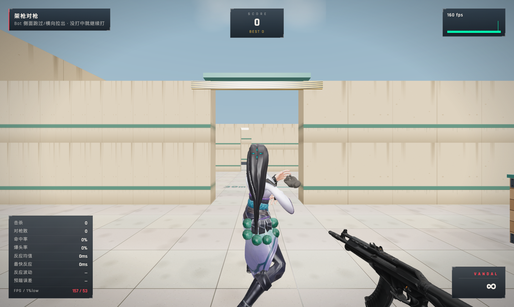
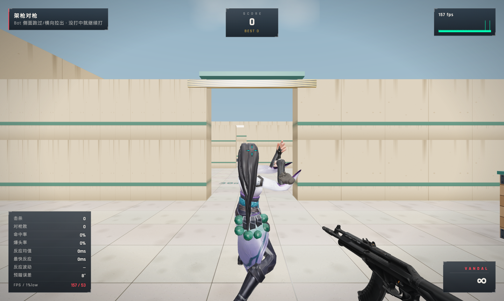
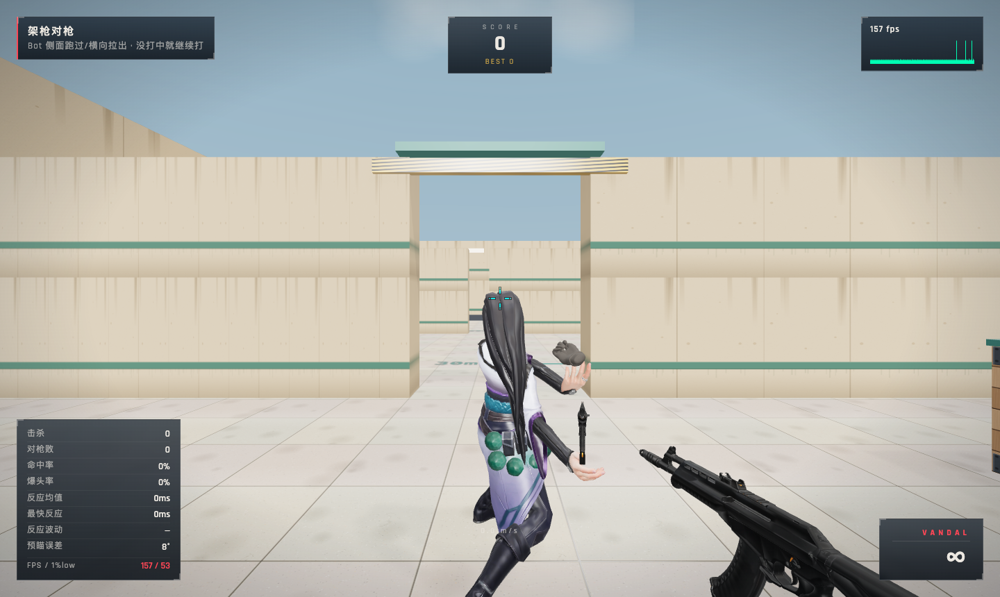
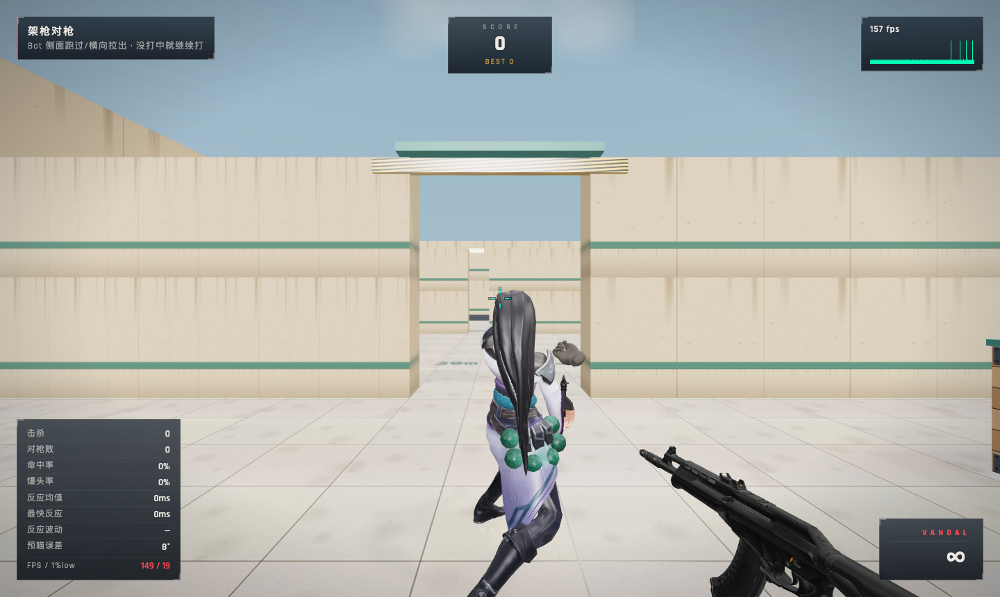
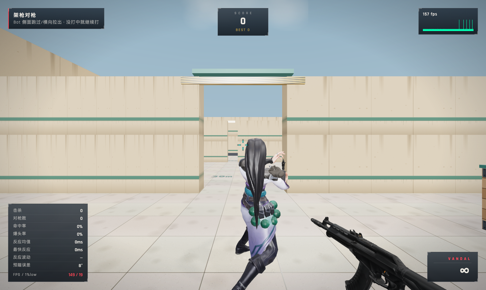
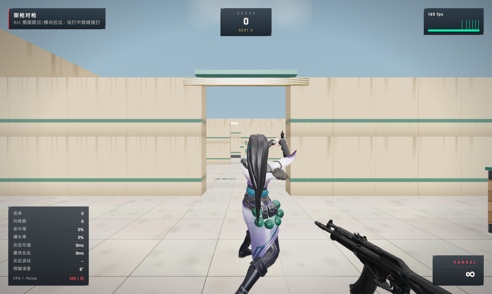
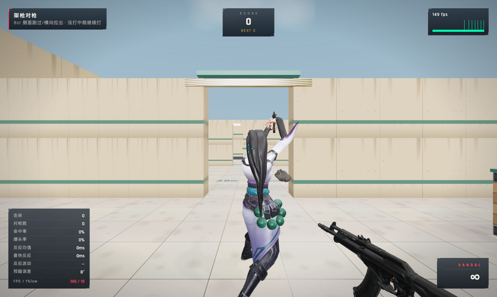
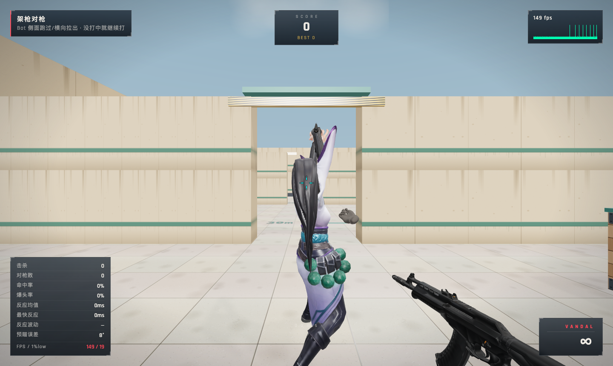
回填：跳高 1.2m（本体社区推导口径）观感；嫌高调 Bot.js JUMP_V0/JUMP_G。
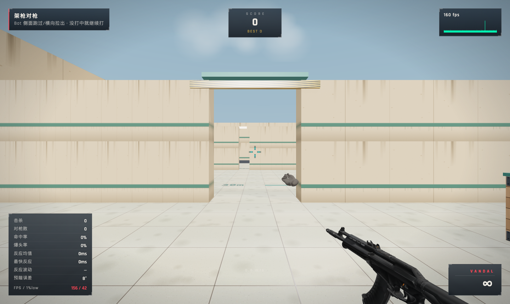
| 参数 | 现值 | 调整入口 |
|---|---|---|
| 跳高/滞空 | 1.2m / 0.676s（社区逐帧推导） | Bot.js JUMP_V0 / JUMP_G |
| 蹲走移速 | 2.7m/s = 50% 跑速（设置滑条可调） | Config.training.crouchWalkSpeed |
| 蹲姿命中区 | 逐区 cr（胸 0.55/腹 0.61/腿 1.72/小腿 5.05）+ 头部骨跟随 | Bot.js zones cr |
| Turn 旋向 | E=右转/W=左转（命名推定） | Locomotion.pickTurnClip 返回值互换 |